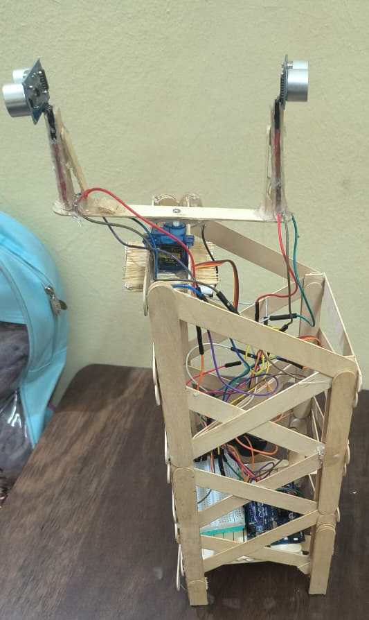
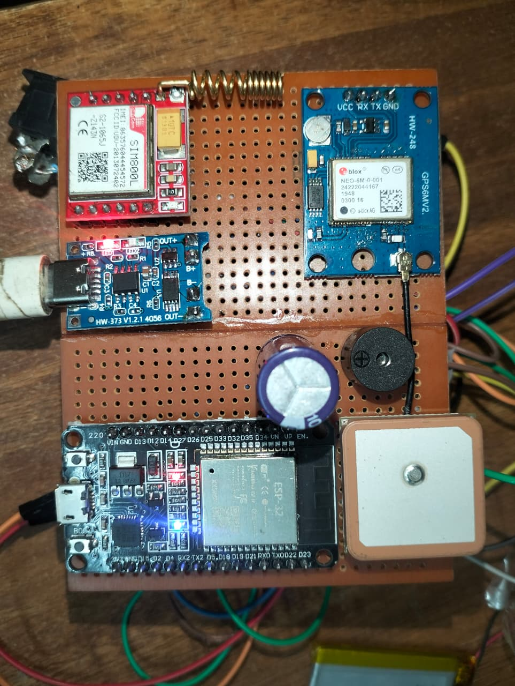
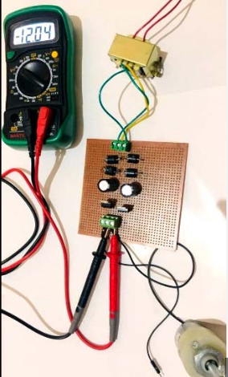
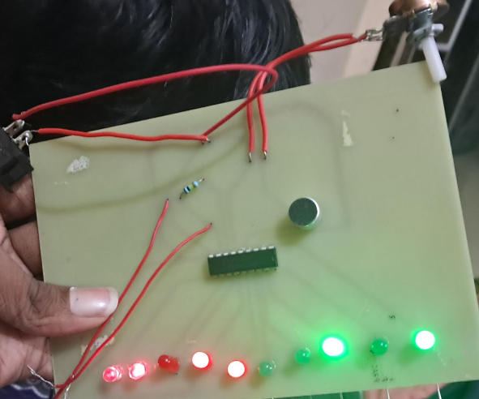

MIT Academy of Engineering
Sem 1 - SGPA: 9.29
Sem 2 - Ongoing
Kotak Graduate Scholarship Recipient
Bharati Vidyapeeth Prashala & Junior College, Navi Mumbai
PCMB – 89.33%
Kotak Junior Scholarship Recipient
Bharati Vidyapeeth Prashala & Junior College, Navi Mumbai
90.80% (With Sanskrit Subject)

Developed a 360° scanning RADAR system using a servo motor and dual ultrasonic sensors. The system detects objects in real-time and displays distance on an LCD while triggering a buzzer for close obstacles. This project demonstrates practical knowledge of sensors, embedded systems, and real-time monitoring for robotics and security applications.

Designed a long-range drone tracking system using ESP32, GPS, and GSM modules. The system activates on an SMS or call trigger, enabling a buzzer and sending real-time location via Google Maps link. This project demonstrates IoT integration, wireless communication, and real-time tracking for security and recovery applications.

Designed and built a regulated power supply that converts 230V AC mains into a stable 12V DC output using a step-down transformer, rectifier, filter capacitors, and LM7812 voltage regulator. This project demonstrates practical knowledge of rectification, voltage regulation, and safe handling of high-voltage circuits.

Developed a real-time audio level visualizer using the LM3914 IC to drive a 10-segment LED display based on sound input from a microphone. The system includes sensitivity control using a potentiometer and demonstrates concepts of analog signal processing and IC-based circuit design.
Completed a comprehensive Web3 development course focused on building decentralized applications (dApps) on the Hedera Hashgraph network. Gained hands-on experience with smart contracts, token services, and Hedera SDKs. Developed a strong understanding of distributed ledger technology, consensus mechanisms, and real-world blockchain applications.
View CertificateSuccessfully completed a course in Generative AI, focusing on modern AI models and their practical applications. Gained experience in prompt engineering, text generation, and building basic AI-powered solutions like chatbots.
View CertificateWorked as a campus ambassador, spreading awareness about initiatives and connecting students with learning and internship opportunities. Developed communication and networking skills.
View CredentialParticipated in a hands-on cybersecurity simulation, learning how to assess vulnerabilities and respond to potential cyber threats. Developed practical knowledge of security frameworks and risk management.
View CredentialCompleted an AI-focused virtual experience, working on real-world tasks related to artificial intelligence. Gained exposure to problem-solving using AI concepts and practical applications.
View CertificateSuccessfully completed a structured simulation involving cloud solution design, scalability planning, and system optimization. Gained practical exposure to AWS architecture and real-world cloud challenges
View CertificateAwarded the Kotak Graduate Scholarship in recognition of academic performance and future potential. Benefited from continuous mentorship, skill-building programs, and career-oriented training initiatives. Engaged in various learning activities designed to strengthen problem-solving, communication, and professional skills, contributing to overall personal and academic development.
View CertificateCompleted a comprehensive data analytics job simulation focused on solving real-world business problems using data. Worked with datasets to identify patterns, analyze trends, and generate meaningful insights to support decision-making. Gained hands-on experience in data interpretation, basic data visualization, and analytical thinking. Developed an understanding of how data-driven strategies are used in professional environments to improve business outcomes.
View CertificateCompleted a comprehensive job simulation focused on industrial engineering and operations management. Worked on real-world scenarios involving process optimization, workflow improvement, and efficiency enhancement. Gained practical insights into production systems, resource utilization, and problem-solving techniques used in industrial environments. Developed an understanding of how data and engineering principles are applied to improve operational performance and productivity.
View CertificateCompleted a certification program focused on the fundamentals of the securities market and financial systems. Gained knowledge of stock markets, trading mechanisms, investment concepts, and regulatory frameworks governed by Securities and Exchange Board of India. Developed an understanding of financial instruments, risk management, and the role of regulatory bodies in ensuring transparency and investor protection. This experience strengthened my financial literacy and analytical skills related to capital markets.
View CertificateCompleted a course focused on developing critical thinking skills in the context of artificial intelligence. Learned how to analyze information, evaluate AI-generated outputs, and make informed decisions in technology-driven environments. Gained an understanding of problem-solving techniques, logical reasoning, and the responsible use of AI tools. This experience enhanced my ability to think analytically and apply critical judgment in real-world scenarios.
View CertificateCompleted a data visualization job simulation focused on transforming raw data into meaningful visual insights. Worked on real-world scenarios involving data interpretation, dashboard creation, and presenting insights effectively. Gained hands-on experience in visual storytelling, identifying trends, and communicating data-driven conclusions. This experience strengthened my analytical thinking and ability to present complex data in a clear and impactful manner.
View CertificateSelected as an Internshala Student Partner (ISP), responsible for promoting internships and training opportunities among students. Actively engaged in marketing campaigns, outreach activities, and peer engagement to increase awareness and participation. Developed strong communication, leadership, and networking skills while representing the platform at the campus level.
View CertificateCompleted an e-learning program focused on developing professional and industry-relevant skills. Gained insights into business operations, workplace practices, and corporate standards followed in global organizations. Enhanced understanding of communication, problem-solving, and professional behavior in a corporate environment
View CertificateCompleted a certification program in Generative AI, focusing on modern AI tools and large language models (LLMs). Gained hands-on experience in prompt engineering, text generation, and building basic AI-driven applications. Developed an understanding of real-world use cases such as chatbots, content creation, and automation, strengthening skills in AI-based problem solving.
View CertificateActive member of the Google Developer Group on Campus, participating in technical events, workshops, and collaborative learning sessions. Engaged in activities focused on enhancing development skills, exploring new technologies, and building real-world projects. This involvement helped strengthen problem-solving abilities, teamwork, and continuous learning in a tech-driven environment.
View CertificateRecognized as a Google Cloud Innovator, actively engaging in learning and applying cloud technologies. Gained hands-on experience with cloud tools, services, and real-world use cases through labs and guided programs. Enhanced skills in cloud computing, problem-solving, and building scalable solutions using modern cloud infrastructure.
View CertificateParticipated in the NIRMAN Hackathon organized by Google Developers Group, collaborating in a team to solve real-world problems within a limited timeframe. Contributed to idea generation, problem-solving, and development of innovative solutions. Gained hands-on experience in rapid prototyping, teamwork, and applying technical skills under pressure, while enhancing creativity and practical thinking.
View CertificateEmail ID :- pawangorad2007@gmail.com
Email ID :- 202501070093@mitaoe.ac.in
Mobile No :- 8655172941